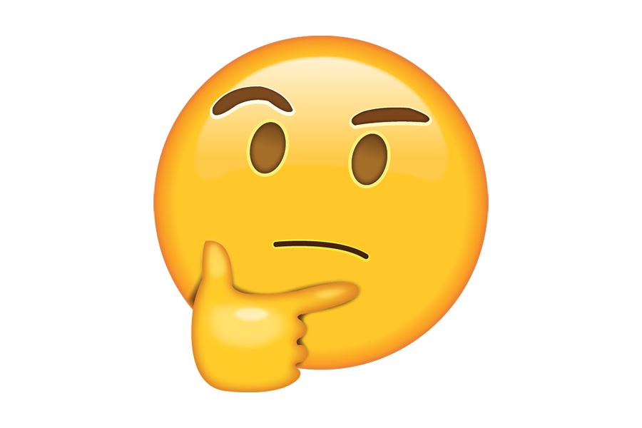

"La popularidad de los memes en la comunicación actual refleja un regreso a la expresión visual compartida, similar a las pinturas rupestres de Altamira, señalando la preferencia humana por la comunicación gráfica y el retorno a la misma"
- Cuevas de altamira
- Pintura Rupestre
- El lenguaje escrito
- La imprenta
- El internet
- El smartphone
- El meme
- Los emojis
- La brecha gerenacional
- El circulo Completo (?)
- La tesis
×